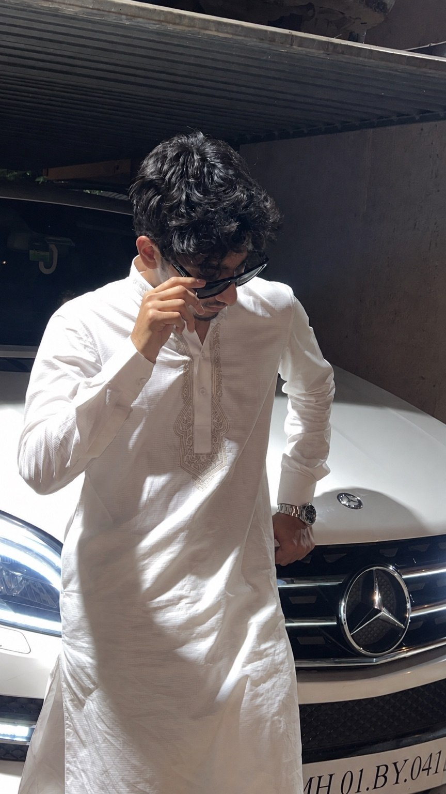
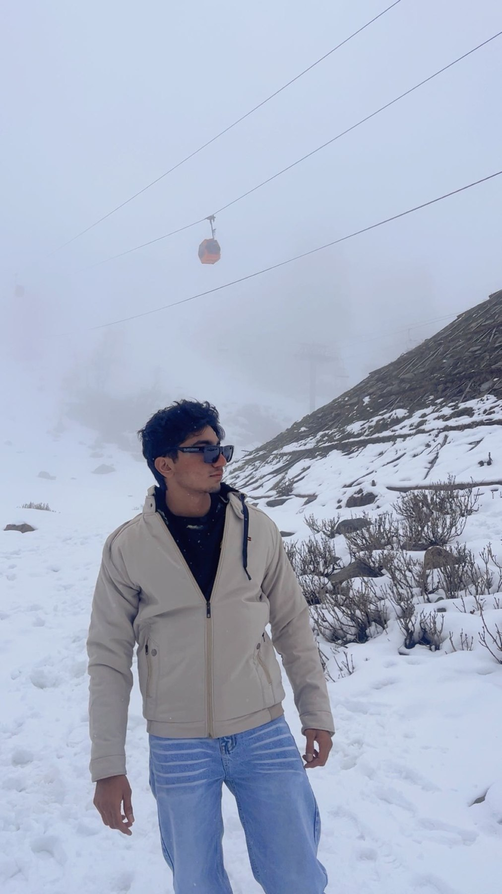
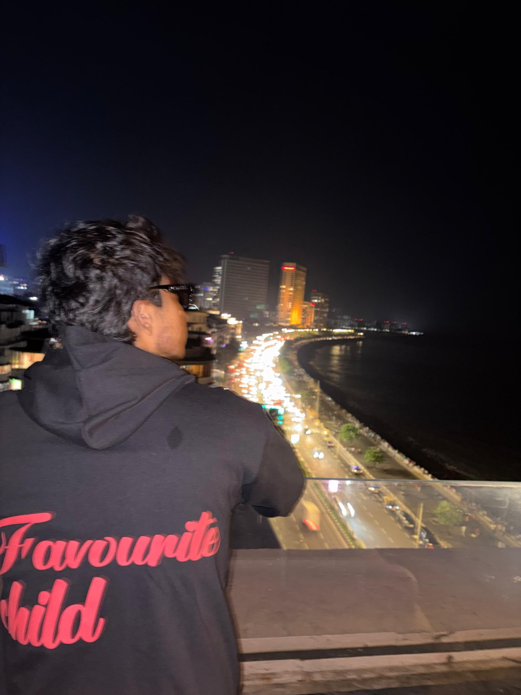
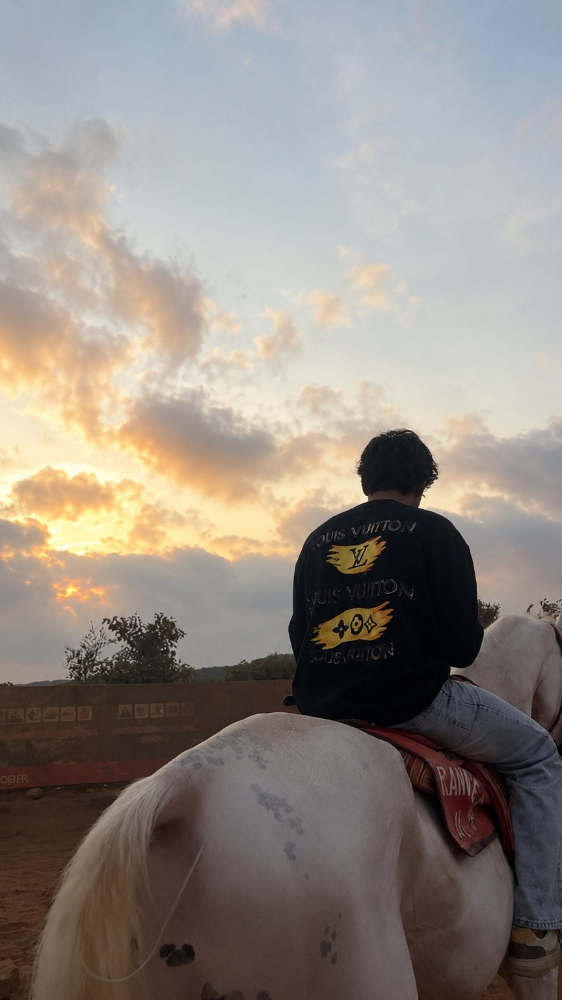
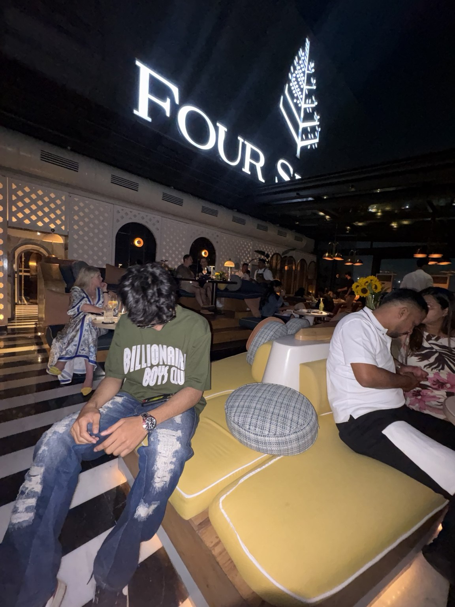
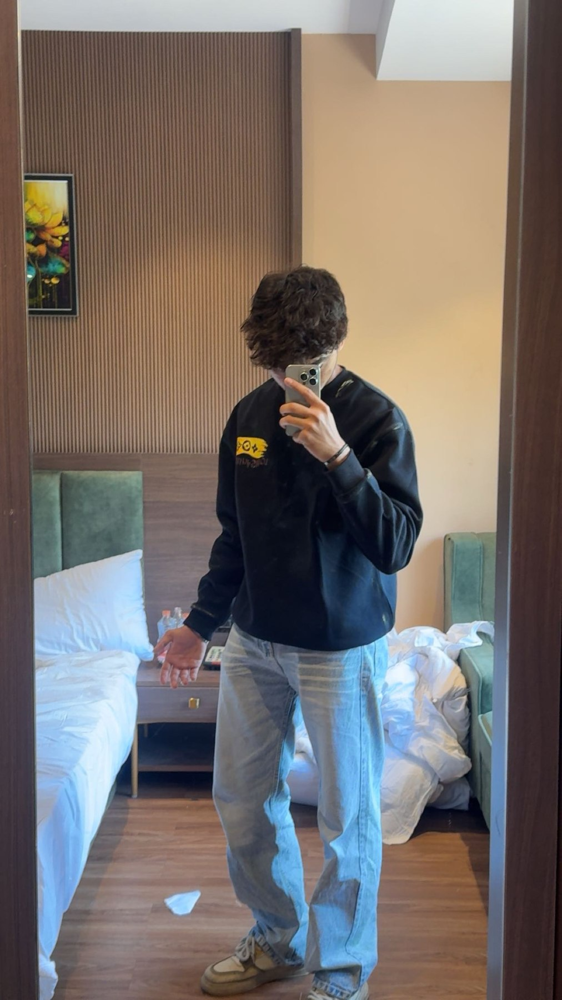
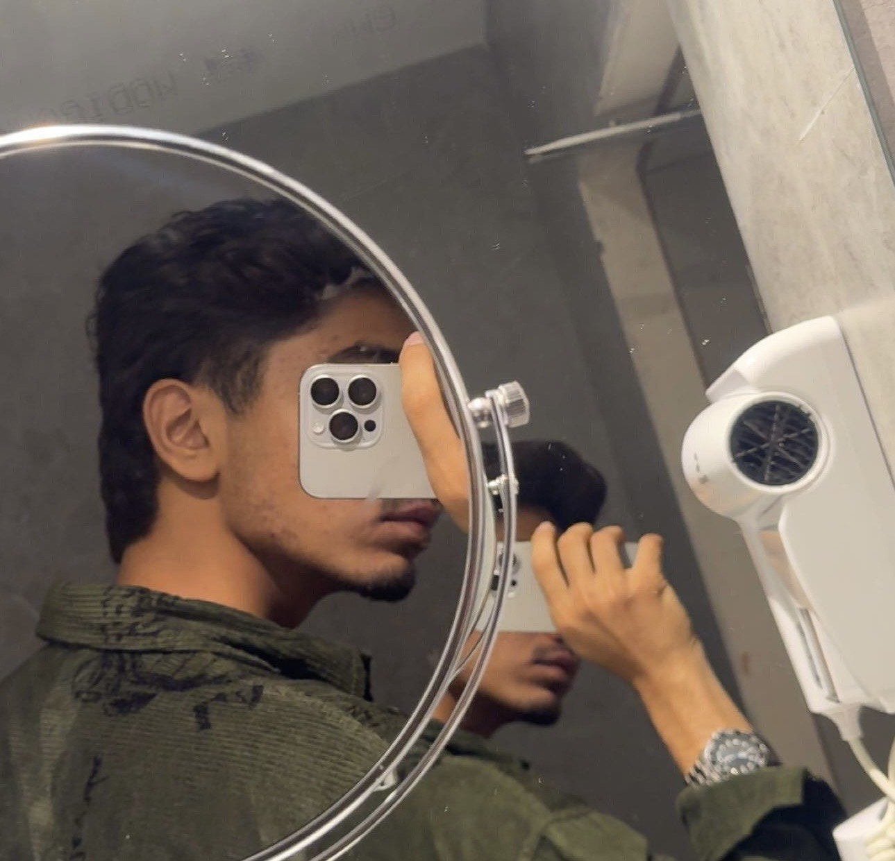

Saad Wadia.
A personal introduction shaped by family, curiosity and the ambition to build a meaningful future.
A considered snapshot of the person behind the name—his roots, interests and a few moments collected along the way.

Still becoming.
Always learning.
Saad Wadia is a young Mumbai-based individual with an interest in personal development, technology, style and experiencing different places. He is at a stage of life where learning, meeting new perspectives and discovering what matters most are all part of the journey.
Family remains an important part of his story. So does the belief that a person’s background can be a foundation—not a finish line. Saad’s focus is on developing his own judgement, building useful skills and taking the next steps with patience and intent.
This website is a simple, personal point of reference: an introduction to Saad, a little context about his family background and a small selection of photographs. It is not intended to tell every part of his story; some things are best kept personal.
Respect the roots.
Earn the next chapter.
Saad’s family background includes a connection to the contracting sector through his father, Sarfaraz Wadia, and the business name Lakdawala Enterprise. Being around the idea of business from an early age can offer a useful perspective on responsibility, relationships, consistency and the effort behind long-term work.
For Saad, that background is a source of context and motivation—not a substitute for his own path. He is focused on learning, gaining experience and gradually defining the work and interests he wants to pursue in the years ahead.
Lakdawala Enterprise
Associated with the contracting sector. Included here as part of Saad’s family background; this page does not make claims about company revenue, assets or business performance.
Quiet confidence.
Long-term thinking.
“Let your choices reflect your values, and let time and effort do the talking.”
Saad prefers a more considered online presence, sharing selected moments rather than every detail. The intention is to keep this space straightforward: a professional introduction that feels personal, current and true to where he is today.
A few frames from the journey.
Travel, personal style and everyday moments—collected in one place.






The story is still being written.
Every journey starts somewhere. Saad’s is shaped by the city he calls home, the people who have supported him and the experiences that continue to broaden his perspective. This page is one small introduction—with room for the future to speak for itself.